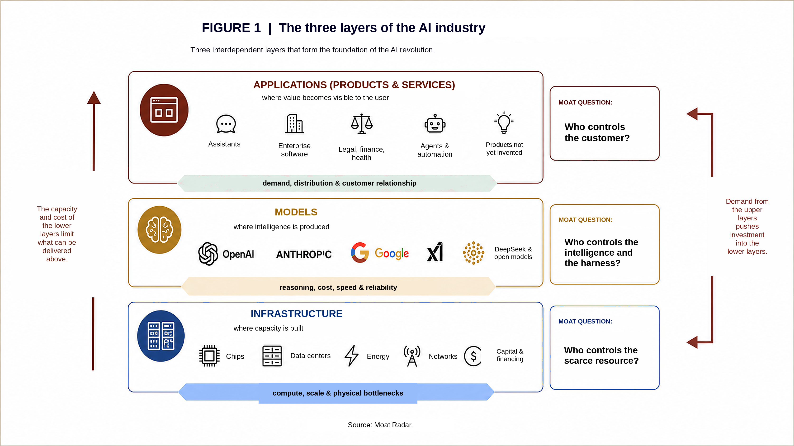

Moat Radar was built to be a compass, a lighthouse, helping readers navigate this new AI revolution. We look at this market through six dilemmas, three on the demand side and three on the supply side. In this piece, we cross two of them: the corporate dilemma (adoption), on the demand side, and capex vs. bubble, on the supply side.
Moat Radar
ISSUE 02 · AUGUST 1 TO 7, 2026
The Trillion-Dollar AI Race: Why No One Can Slow Down
What is driving this industry to advance at such a frightening pace, chasing ever-smarter models and pouring in investment at a scale rarely seen in so little time?
The foundations
To explain the race for capex and superintelligent models, we first need to answer two questions: what does it actually take for an AI model to work in practice? And how far do the major labs believe this technology can go?
The first question: what does it take for an AI model to work in practice? Think of three stacked layers (figure 1). At the bottom sits infrastructure: the chips, the data centers, the electricity, the network that ties it all together. It's the industrial park. In the middle sits the model: the system trained on a massive amount of data that has learned to recognize patterns and generate responses. It's the brain. This is the layer where we already recognize the models we test and adopt, both personally and inside organizations: Claude, from Anthropic; ChatGPT, from OpenAI; Gemini, from Google; Grok, from xAI, to name some of the best known in the market.
On top sits the application: the product you, the end user, actually touch. It's the storefront. Although thousands of applications already exist, few categories beyond general assistants and coding tools have so far shown recurring use, deep integration and durable monetization, and that is exactly where a vast ocean of opportunity opens up for technology companies. We can compare this moment to the arrival of the internet in the 1990s, when its uses were very basic, like reading a newspaper, and we had no idea how profoundly the products and services built on top of it would transform our lives. Mobile internet, cloud computing and smartphones together created ecosystems like Waze, Uber and countless services we now consider indispensable. This layer of products and services is the one that generates the most value for the entire industry, and in this new revolution we don't even know yet what's coming.

FIGURE 1 · The three layers of the AI industry · Moat Radar
We see one clear layer on the consumer side, in demand, one clear supply-side layer, infrastructure, and a hybrid layer in the models. Here another question emerges: as products and services become better known and more widely used, will every layer beneath them start being treated as a commodity? Will models stop mattering to the consumer, the same way we barely remember today that, in the 1990s, we had to buy a connection kit and pay a provider just to stay online, for tasks as simple as reading a newspaper, checking the news or sending an email? Will there come a point, a few years from now, when we're no longer debating whether we use Grok or Claude and defending their abilities?
It's worth turning now to the second question, which will help us understand the AI industry a little better: what destination does one of the leading AI labs envision1? In July 2024, Bloomberg obtained an internal OpenAI discussion that mapped out a path for the development of this industry, still in its early stages of forming. It proposed a five-level progression, shown in figure 2.
At the first level, conversational systems: they hold a natural dialogue, answer questions and draft text from learned patterns, which is what we already use every day in the tools mentioned above. At the second, systems capable of human-level reasoning: the difference here isn't conversing well, it's thinking in steps before responding, breaking down a complex problem, testing hypotheses, arriving at a solution the way a specialist would, the kind of capability that has reached very high performance on math and coding benchmarks over the past year. At the third level are agents, systems capable of acting autonomously on the user's behalf. This is the frontier the industry is now trying to turn into practical adoption, still mostly within bounded environments and under supervision. At the fourth, models that help invent, creating paths and solutions not proposed by a human. At the fifth, systems that do the work of an entire organization, orchestrating intelligent agents across every front of value creation.

FIGURE 2 · The five levels and real-world adoption · Moat Radar
In the figure, we can compare OpenAI's vision against real adoption of each level over the past few years. From the second stage onward, however, a growing gap opens up between the technical capability models demonstrate and their practical adoption. The clearest early adopters have been programmers, who have used models to speed up their coding work. And over the past year we've seen accelerating adoption among users for research, writing and more routine tasks, such as drafting contracts. In some cases, a small number of consumers are already starting to automate tasks with AI agents. At the corporate level, this stage still looks far more nascent.
What matters here is that the step between everyday model use, like queries and task execution, and true agentization looks far more complex than assumed. In many cases, what we see are basic automations that don't require a high degree of sophistication or reasoning from the models. Which brings us to another question: if models have mostly been used for such basic tasks, or for coding, why are labs racing so hard to have the fastest, most efficient and most intelligent model on the market?
Who loses
Anthropic launched legal plugins capable of automating parts of contract review, NDA triage, compliance, briefing drafts and standardized responses. What rattled the market in February 2026 wasn't just the model's progress, but the signal that the model owner was starting to directly capture workflows previously served by specialized software. The market read this as a sign that part of the value captured by the intermediary could be compressed, not as proof that it would cease to exist. Thomson Reuters fell close to 18%, RELX dropped 14%, and two S&P indices tracking software, financial data and exchanges together lost roughly $300 billion in market value that day.
The episode spilled over into the rest of the SaaS sector, which began to be treated as an incumbent at risk of obsolescence, even outside the legal field. As of June 22, 2026, Salesforce was down 43% year to date, even though Agentforce's ARR (annual recurring revenue) had grown 205% year over year, to $1.2 billion. Atlassian, for its part, fell as much as 46% over six months, the kind of contrast that shows the market is pricing in a structural risk, not the quarter's results.
Not even the biggest, most solid tech giants escape the same logic, just at a pace that's still manageable. According to Similarweb, 68% of Google searches now end without a click to an external site. The shift directly threatens publishers and businesses that depend on organic traffic; for Google itself, it represents both a cannibalization of the traditional search format and an attempt to preserve its centrality in information distribution. Meta and Amazon, for their part, have already understood they need to lead innovation in their own domains, or risk watching their businesses turn to dust through obsolescence.
This doesn't mean every specialized software company is doomed. Owners of proprietary data, systems deeply integrated into workflows, brands associated with trust, and companies protected by regulatory requirements can use frontier models as an input rather than being replaced by them. The moat doesn't necessarily disappear, it often migrates from code to data, distribution, integration and trust.
Why the rush
The previous sections already make clear why this new technological revolution will require technology companies to move, and fast. Still, to help the reader follow along, let's break this challenge down within each of the three structural layers of the AI industry we proposed above, since the players in each one have their own reasons to keep accelerating. We'll work from the layer closest to the consumer down to the most basic one, infrastructure, since the layers above pull more speed out of the ones below.
The products and services layer. Given everything above, it's clear the entire technology industry, without exception, is under pressure and needs to reinvent itself. It knows its current empires will be challenged by insurgents that are faster and more agile with AI. The labs themselves (Anthropic's Claude, for instance) seem willing to climb into this products-and-services layer too. That's exactly why we see every major technology corporation investing not only to redesign its existing business, but to build new businesses that can replace revenue that risks becoming obsolete. Meta is an example of a company that hasn't yet felt this blow in its results: its revenue grew 28% in the second quarter of 2026, to $60.8 billion. In the same earnings presentation, the company reported that 9 million small businesses were already using at least one of its generative AI creative tools, and maintained a capex projection of $130 billion to $145 billion for the year, a sign it knows it needs to move before feeling the same blow that hit the SaaS sector. Most tech giants have also realized they couldn't accelerate innovation in their own segments without owning computing capacity, and that this layer would become a bottleneck for their own growth, exactly the reasoning behind the verticalization we already covered in the bottleneck economy dilemma: building their own silicon and expanding their own data center infrastructure to reduce dependence on critical suppliers and secure capacity.
The models layer, where the labs live. Here we identify four main motivators keeping them in acceleration mode.
The first is reliability for the next level: today's models are already good enough to deliver the basic agentization we're seeing now, but labs aren't confident they're reliable enough for the next level, in which agents solve problems without human supervision, breaking down goals, creating subtasks and correcting their own execution. It's a cautious race: whoever is technically ready once market trust allows agents to run unsupervised gets there first.
The second is effectiveness, measured both in speed and sophistication of reasoning and in the cost of every response a model generates, delivering more with less infrastructure consumption. And the bar has moved fast here: according to the Stanford AI Index, the cost of achieving GPT-3.5-equivalent performance on the MMLU benchmark fell more than 280-fold between November 2022 and October 2024, from $20 to $0.07 per million tokens. Competition keeps accelerating that drop: OpenAI cut the price of GPT-5.6 Luna by 80%, while Chinese open-weight models, such as DeepSeek's, continue to offer very low-cost APIs, though comparisons vary depending on the model, token volume, cache use and the level of performance required.
The third motivator is controlling the orchestration layer, the harness, the set of tools, memory, context, permissions and verification wrapped around the model, and using it to become a platform. According to a Menlo Ventures estimate, Anthropic reached 54% of the enterprise market for coding models in 2025, a performance driven largely by the popularity of Claude Code. Separately, the company is also building vertical products for the legal, financial and healthcare sectors, including a partnership with TCS (Tata Consultancy Services, one of the world's largest IT services firms) to bring Claude to 50,000 employees across 56 countries.
The fourth is leadership, prestige, staying in the media and the conversation, which helps attract more investment to keep feeding this engine. That's why every model launch comes wrapped in benchmarks and announcements, even when the practical gain for the end user is marginal.
The infrastructure layer. Here, the race for growth and investment is driven by the two layers above it: big tech in a defensive move to secure compute for its own growth, and labs investing in dedicated compute to train and ship their next models faster. That leaves an open question, one that deserves its own future edition: is all this capacity being built backed by real demand, or is it already running ahead of it? That's the basis for the concern that we may be building an investment bubble that could burst at any moment.
Conclusion
Everyone is running, but behind the individual reasons we've walked through here, one for each layer, lies a simpler and more uncomfortable explanation: this isn't innovation, it's revolution. Innovation improves what already exists. Revolution redefines who gets to exist at all. And a revolution forgives no one: no player in the technology industry, no matter how large or established, is exempt from having to move.
OpenAI may feel this pressure in a particular way: according to Bloomberg, it was the one that drew the five-level map we opened this piece with, and it's now racing against the very clock it built, trying to prove that the vision it laid out internally also holds up in practice. The other labs, even without having signed on to the same map, are chasing a similar logic, each with its own yardstick for progress.
The result is an unprecedented volume of investment. A baseline estimate from Goldman Sachs points to roughly $765 billion in AI infrastructure-related capex in 2026, spanning compute, data centers and energy. Cumulatively between 2026 and 2031, that same estimate reaches $7.6 trillion. And everything suggests we're only at the beginning.
Against this backdrop, a practical answer has already surfaced throughout this piece: as researcher Ethan Mollick has been pointing out, an AI's usefulness no longer depends on the model alone, it also depends on the application and the harness, the set of tools, instructions, context, permissions and verification mechanisms that turns intelligence into action. It's this harness that's still missing to take a model from the role of assistant to that of an agent able to execute, with growing autonomy, a specific process once carried out by a person, the step that has proven far harder to climb than the industry expected. LangChain itself documented this: using the exact same model, without changing anything about it, it climbed from 52.8% to 66.5% on Terminal-Bench 2.0, moving from 30th to 5th place at the time of publication, simply by rebuilding the harness.
But the question that remains, running through everything we've covered here, is bigger than any model or harness: how will society keep up with change of this magnitude, at this speed? That question still has no ready answer, and it may be the most important theme Moat Radar will need to grapple with going forward.
Questions and answers on this issue
What is Moat Radar?
Moat Radar is a weekly newsletter by Jorge Rocha that tracks the AI industry through six structural dilemmas. On the supply side: capex vs. bubble, the bottleneck economy, and how long we'll keep control. On the demand side: model vs. channel, the corporate dilemma, and the humanoid race. Its goal is to turn recent events into a clear, in-depth read on where this industry's risks, opportunities and moats actually are.
How is the AI industry organized? How is it structured to deliver models people actually use day to day?
In three stacked layers. At the base, infrastructure: chips, data centers, energy and networks — the industrial park. In the middle, models: the trained systems that recognize patterns and generate responses — the brain. At the top, the application: the product the end user actually touches — the storefront. Each layer depends on the others, and each has its own moat question: who controls the scarce resource, who controls the intelligence and the harness, and who controls the customer.
What are the proposed stages of AI development?
Five rungs, according to an internal OpenAI classification reported by Bloomberg in 2024: conversation; reasoning, with systems able to solve complex, multi-step problems; agents, capable of acting autonomously on the user's behalf; innovation, creating paths not proposed by humans; and organization, coordinating agents across every function of a company. In Moat Radar's assessment, starting at the second rung, a growing gap opens between demonstrated technical capability and practical adoption.
Why do labs keep racing for the fastest model, if most of today's usage is still basic?
Because the race isn't just about today's usage — it's about technical readiness for the next rung: agents that are more autonomous, more reliable, and able to execute long tasks with less supervision. Labs are also competing on four fronts: greater reliability, a better capability-to-cost ratio, control of the orchestration layer (the harness), and enough of a lead to attract users, talent and capital.
Does an official OpenAI document describing the five levels of AI evolution actually exist?
No. It's an internal discussion captured by Bloomberg in July 2024, never officially published by the company. That distinction matters: it's the view the report attributes to OpenAI, not a public statement from the company.
What is a harness, and why is it decisive in turning a model into an agent?
In everyday English, a harness is the gear that turns raw force into controlled force — think of a horse pulling a carriage. In AI, it's the layer wrapped around the model that defines how it acts: tools, instructions, memory, context, permissions, integrations and verification mechanisms. The harness doesn't replace the model's intelligence; it turns that intelligence into organized, reliable execution. Ethan Mollick has been helping explain this new architecture to a broader audience through three elements: model, application and harness. LangChain showed its impact in practice: keeping the same model, it raised performance from 52.8% to 66.5% on Terminal-Bench 2.0 — moving from roughly 30th to 5th place at the time — simply by rebuilding the harness.
Is the $765 billion in AI infrastructure capex projected for 2026 a sign of a bubble?
Not by itself. The figure is a Goldman Sachs baseline estimate for the annual investment needed in compute, data centers, energy and related infrastructure — it isn't a direct forecast of end demand for AI. Whether a bubble exists will depend on how much of that capacity gets used, how fast demand actually grows, the useful life of the equipment, and the economic return it produces. The piece leaves this question open, as one of the dilemmas Moat Radar will keep tracking in future issues.
Are SaaS companies really doomed by AI?
Not necessarily. The market reaction hit SaaS, software, data and professional-services companies alike, reflecting the fear that models and agents will capture workflows once handled by specialized intermediaries. But companies with proprietary data, deep integration into customer processes, distribution, trusted brands, or regulatory protection can preserve — or rebuild — their moats by using models as an input, rather than simply being replaced by them.
Is this just another wave of innovation, or, as the piece argues, a revolution?
Per the issue's central argument, it's a revolution: it doesn't just improve what already exists, it redefines who has the right to exist in the tech industry. That's why no player, however large, is exempt from having to move.